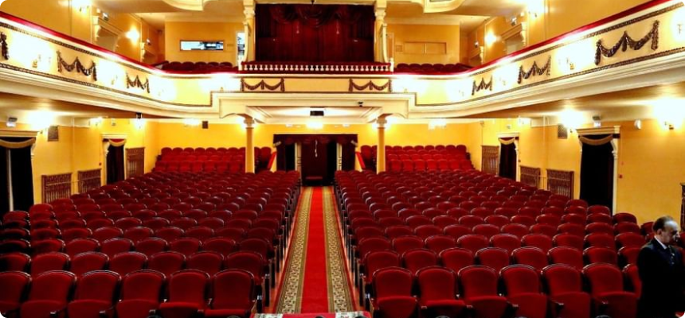

Мичуринский драмтеатр отменил диплом на международном фестивале спектаклей о любви
17 июня 2022 12:28
Екатерина Татаринцева, Online Tambov.ru

Весной 1897 года "Тамбовские губернские ведомости" сообщали о предполагаемой постройке в Козлове зимнего театра на частные средства купцов Злобиных, Адриана Алексеевича и его сына Александра. Было подписано разрешение перестроить под театр их табачную фабрику (угол улиц Московской и Архангельской - ныне на этом месте здание городской администрации).
Театр был открыт 30 ноября 1897 года. Он получился большим, четырехъярусным, на 600 мест. Появление такого театра многими жителями города было воспринято как вызов и нарушение привычного уклада жизни... Но... в день открытия театра "...целое море рукоплесканий приветствовало появление Злобина на сцене..."
Первый антрепренер театра Семен Иванович Томский для открытия сезона выбрал пьесу французского драматурга В. Сарду "Надо разводиться". В течение сезона были поставлены "Лес" и "Без вины виноватые" А. Н. Островского.
Среди тех, кто стоял у истоков Козловского театра, следует еще назвать Воронова Николая Алексеевича, учителя городского училища, одного из устроителей общества народных чтений, неоднократно ставившего спектакли.